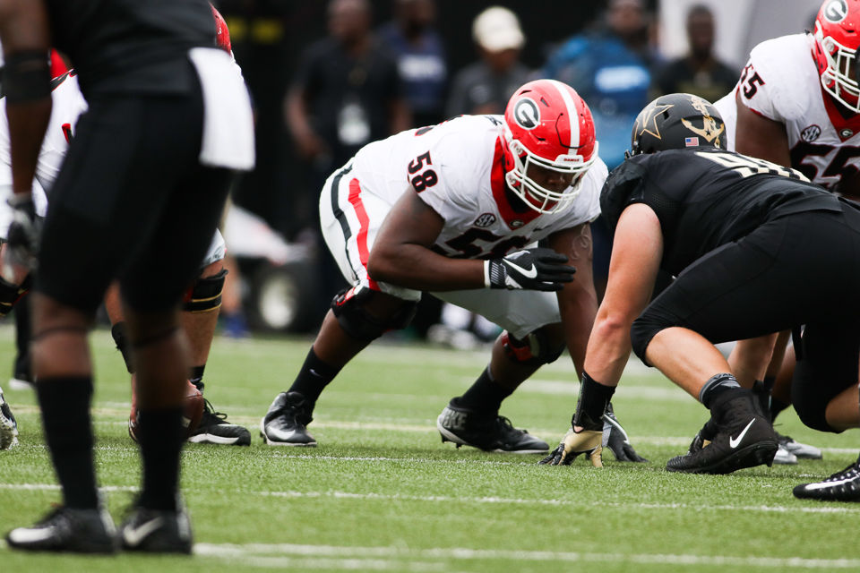

Portfolio
In this photo is an accomplishment that not all athletes will ever get the chance to achieve! At this is very moment in life was a dream come true!
My Beginning
-

My Experience
In my career as a college Student-Athlete. I had the privilege to learn and grow not only as a athlete but as a young man as well! Majored in Family and Consumer Science Economics w/ a minor in International Affairs. I was blessed to seek knowledge and continue to play the sport I love!
- Article I : Commiting to the G !
- Article II : Working Hard for Georgia !
- Article III : Journey for Growth!
Contact Me @
- Email Apatrickallen14@aol.com >
- GitHub: Pat M. Allen or Patrick Allen
- Mobile:443.805.8598